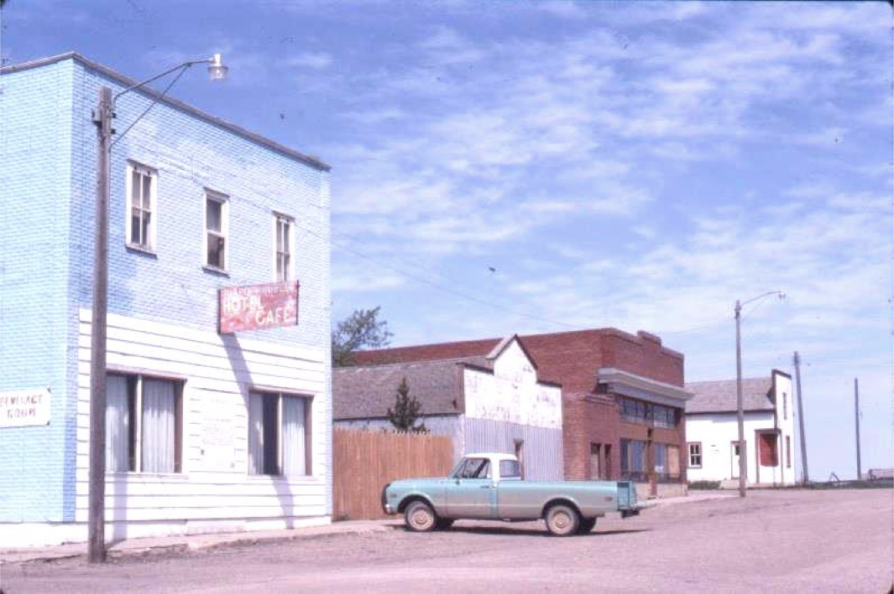

-1-MasterItem.svg)
Stories of Westminster United Church & its People / Page
110
arranged with a rancher 20 miles from Piapot to be visited
by Ernest and who was to give the man the ride of his life.
Ernest road out to visit old Mose Elliot who took him
out to where the ranch’s horses were grazing. Mose
introduced Ernest to ‘Poison,’ a horse well-named for
its bucking at the Maple Creek Stampede. To Ernest’s
horror it was clear that Mose expected him to ride the
horse. To save face he had no choice.
Three times that afternoon he got on Poison and three
times Poison threw him off. Bloodied but alive he had
proved his grit if not his boast and, locally became a
legend of horsemanship. When he road back to Piapot a group of small children
came out to the road
to cheer him home. One of those small children was the grocer’s son, Nelson. Nelson Mercer would
become the 7th minister of Westminster Church.
In 1932 Ernest headed for New York to Union Theological College to work towards
a Masters
degree. Founded in 1836 by the Presbyterian Church, Union was a bastion of
progressive Christian
Scholarship. In 1891, Charles A. Briggs, who was being installed as the chair of
Biblical Studies,
delivered an inaugural address in which he questioned the verbal inspiration of
Scripture. The
Presbyterian Church removed him from office and the College removed itself from
denominational
oversight.
By the 20th Century it had become a centre for Liberal Christianity. It is noted
especially for Black
Theology and Womanist Theology which focuses the Bible as a lens to empower and
liberate African-
American women in America. Reinhold Niebuhr and Harry Emerson Fosdick were
prominent there as
was James Moffat, Biblical scholar and Bible translator. Dietrich Bonhoeffer and
Paul Tillich also
served on the faculty.
Table
of Contents
Rev. Ernest Marshall Howse
